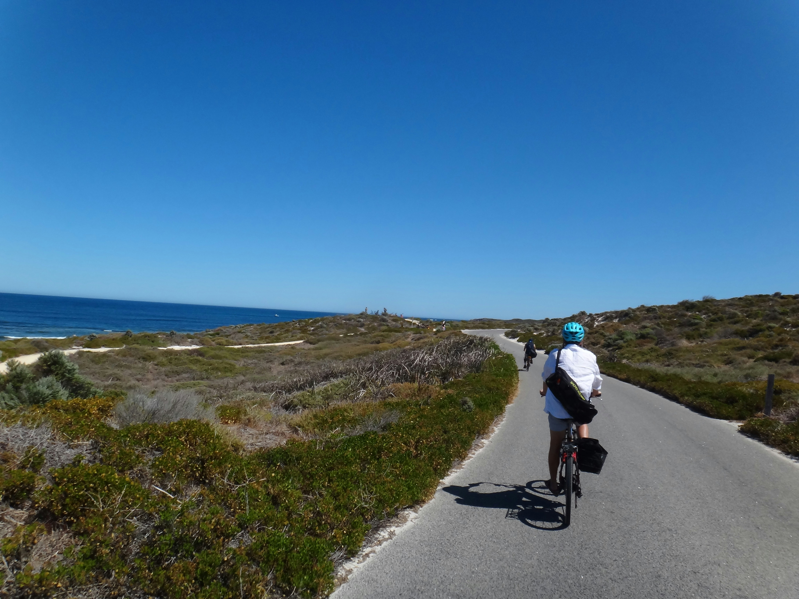

Rainforest Hike & Waterfall
Trek through Taniti's lush volcanic rainforest with a certified local guide, ending at a hidden waterfall where you can cool off with a swim. One of the island's most popular experiences and a great introduction to the interior.
$89 / person
Book Activity
Snorkelling & Coral Reef Tour
Explore vibrant coral reefs teeming with tropical fish just off Taniti's south coast. Snorkel gear, wetsuit, and a certified dive guide are all included. Suitable for beginners and experienced swimmers alike.
$65 / person
Book Activity
Volcano Sunrise Trek
Rise before dawn for the hike of a lifetime — up to the rim of Taniti's dormant volcano to watch the sun rise over the Pacific. A challenging but rewarding climb with breathtaking 360° views at the top. Max 8 guests.
$110 / person
Book Activity
Cultural Village Walking Tour
Walk through Taniti City's historic quarter with a local guide who brings the island's past to life. Visit the traditional fish market, the old harbour, and finish with a tasting at the Yellow Leaf Brewery — Taniti's only craft beer producer.
$45 / person
Book ActivitySunset Catamaran Cruise
Sail along Taniti's dramatic coastline as the sky turns gold. The cruise includes a snorkelling stop at a sheltered bay, light refreshments on board, and excellent chances of spotting spinner dolphins in the calm evening waters.
$79 / person
Book Activity
Island Bike & Beach Day
Spend a full day cycling Taniti's scenic coastal road at your own pace, stopping at secluded beaches, local food stalls, and a working fishing village on the north shore. Bike hire, helmet, and a route map are all included.
$55 / person
Book Activity